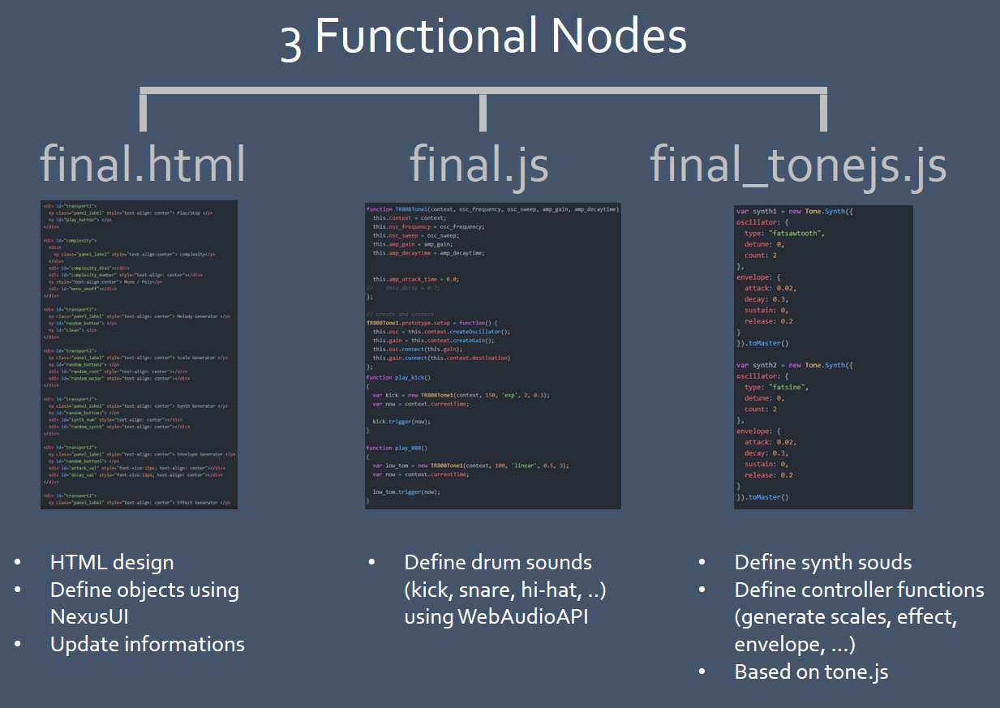
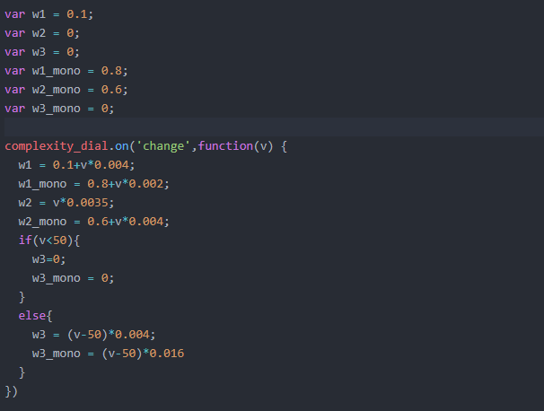
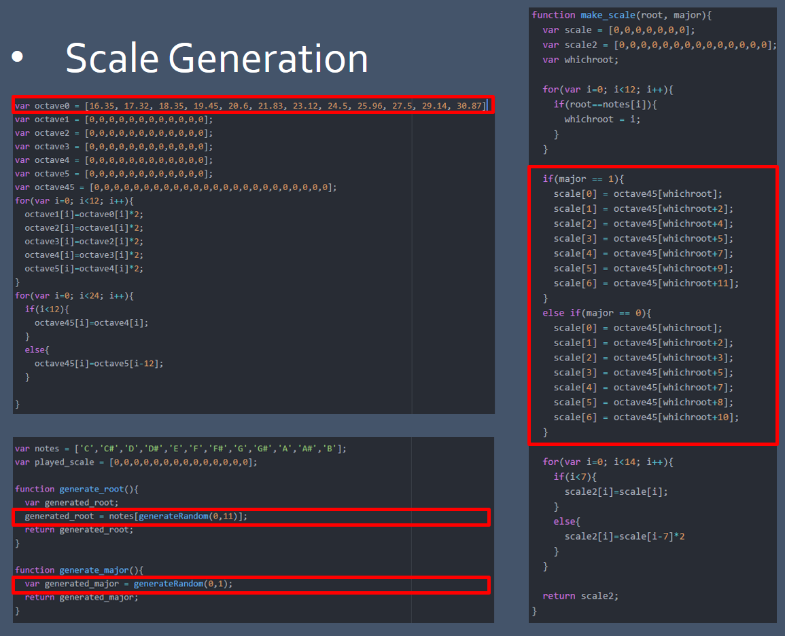

2018 Fall CTP431 Final Project
Mingyu, Kim
0. Introduction
This project is designed for who are willing to learn or experience composition(or producing), but don't know WHERE TO START FIRST.
To help them, I implement this project, Automatic Music Generator so called 'What's Your Music?'.
Who are NOT familiar with some musical theories(i.e. Harmonics), sound design, or even has no idea, are all welcome.
You DO NOT need to worry about anything.
Just CLICK, LISTEN, get INSPIRTION and Start your first music.
1. Contents
This project contains 2 types of part:
2 'Sequencer' part / 7 'Control Node' part.
In 'Sequencer' part, you can make melody notes on left side & drumline notes on right side.
The melody sequencer uses tone.js to generate synth sound, and drumline sequencer uses WedAudioAPI to generate drum sound.
By clicking each notes, you can compose your own melody and drumline.
Melody sequencer consists of 16 columns with 14 rows(total 2 octaves). It is based on heptatonic(7 notes in 1 octave).
Drumline sequencer consists of 5 elements(kick,snare,closed hihat, open hihat, 808 Bass).
With melody and synth sequencers, you can make FULL music.
On the downside, there are total 7 'Control Nodes'(except Play/Stop).
With these nodes, you can control:
Complexity / Melody / Musical Scale / Synth Type / Synth Envelope / Synth Effect / BPM
By just clicking 'Random Set' buttons, sound parameters will be changed automatically.
Your job is just clicking and finding your favorite combination.
2. Technical Aspects
This project consists of mainly 3 functional nodes:



3. References
Ramsophone
http://robertvinluan.com/Ramsophone/
Blips of Life
http://blipsoflife.herokuapp.com/